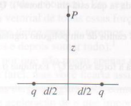

Campo elétrico gerado por um par de cargas isoladas
Nesta seção iremos discutir acerca do campo elétrico gerado por um par de cargas de mesmo sinal, que estão separadas por uma distância d. Verificando se o resultado é coerente com o que se espera quando $z >> d$

Neste caso estamos lidando com um problema com alto grau de simetria, onde as cargas estão equidistantes do centro do eixo de coordenadas e ambas estão sendo estudadas em relação ao mesmo ponto P(0,0,z).
As componentes horizontais do campo elétrico se cancelam por conta da simetria do problema.
O campo resultante do problema tem apenas direção resultante no eixo z e pode ser escrito pela equação
$$ E_{z} = \frac{1}{4 \pi \epsilon_{0}} \frac{2q}{r^2} cos\theta $$
Onde $ r^2 = z^2 + \frac{d}{2}^2 $ ; $ cos \theta = \frac{z}{r} $
Então
$$\vec {E} = \frac{1}{4 \pi \epsilon_{0}} \frac{2qz}{(z^2 + \frac{d}{2}^2)^{3/2}} \hat{z} $$
Quando levamos o resultado para a aproximação $ z >> d $ notamos que a equação se aproxima ao resultado de uma carga pontual com módulo 2q; O campo então é reduzido a expressão
$$ \vec{E} = \frac{1}{4 \pi \epsilon_{0}} \frac{2q}{z^2}\hat{z}$$